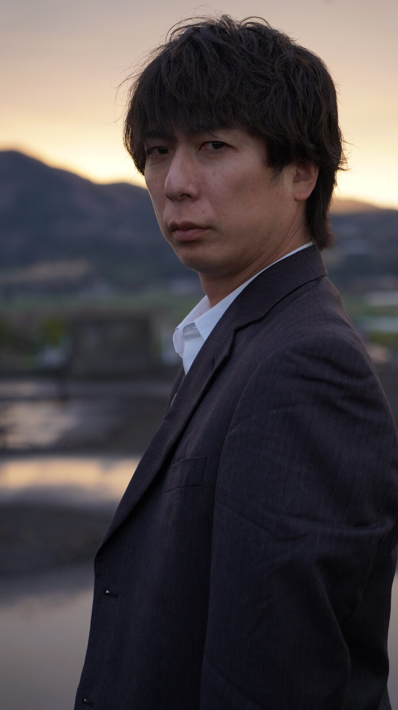

國分玲役 船ヶ山哲
1976年生まれ、神奈川県出身。俳優・歌手・作家として幅広く活動。著書『捨てられた僕と母猫と奇跡』は14万部を超えるベストセラーを記録し、作家としても高い支持を集めている。近年は映像作品への出演を重ね、2026年には映画『祝山』『361』『#拡散』、劇場アニメ『ポロロ コンピュータ王国大冒険』など話題作に出演。ドラマでは日本テレビ『おちたらおわり』をはじめ、『キスは捜査のあとで』などに出演し、俳優として存在感を発揮している。歌手としても活動し、本作では主題歌「TABOO」を担当。表現者として、俳優・音楽・執筆の各分野で精力的な活動を続けている。